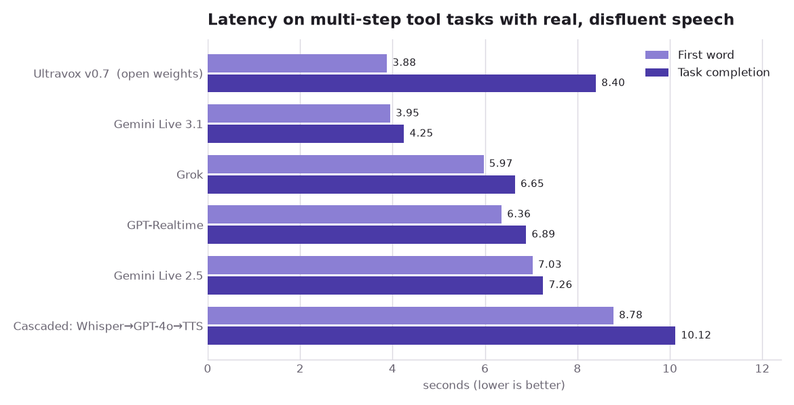
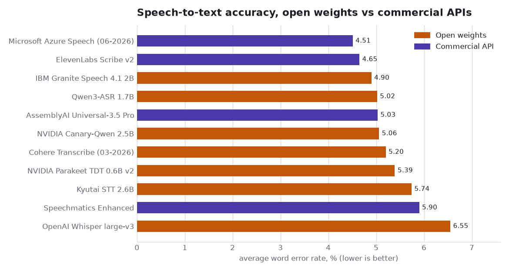
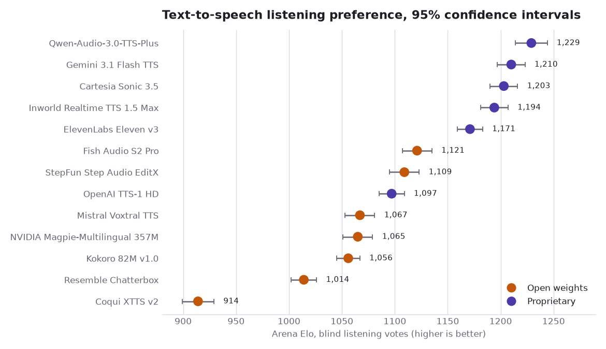
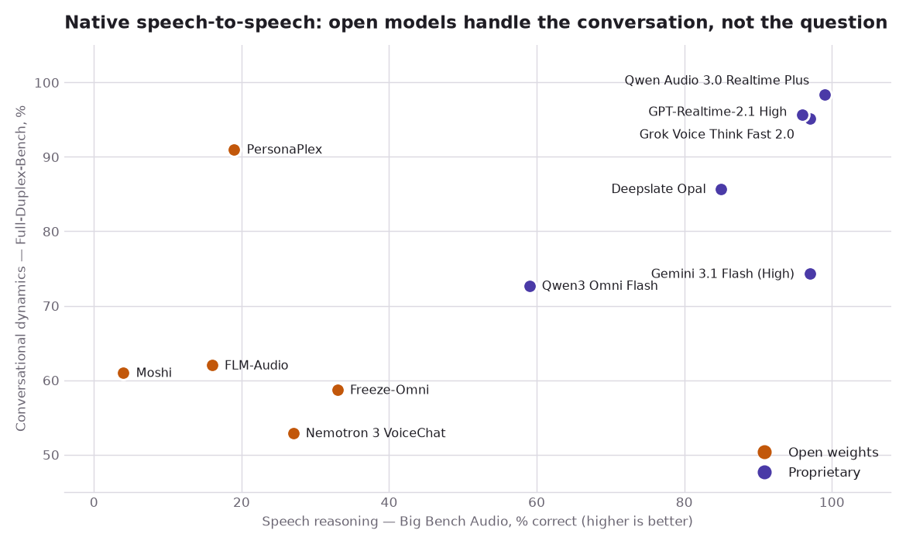

%%{init: {'theme':'base', 'themeVariables': {'primaryColor':'#ffffff','primaryBorderColor':'#4A3AA7','primaryTextColor':'#1a1a1a','lineColor':'#4A3AA7','edgeLabelBackground':'#ffffff'}}}%%
flowchart LR
subgraph C["Cascaded pipeline"]
direction LR
A1["🎤 audio in"] --> V["VAD /<br/>endpointing"]
V --> S["STT"]
S -->|"transcript<br/>(inspectable, committed)"| L["LLM"]
L -->|"reply text"| T["TTS"]
T --> O1["🔊 audio out"]
end
subgraph N["Native speech-to-speech"]
direction LR
A2["🎤 audio in"] --> E["audio codec<br/>→ speech tokens"]
E --> M["single S2S model<br/>(listens + speaks at once)"]
M --> D["speech tokens<br/>→ waveform"]
D --> O2["🔊 audio out"]
end
%% Invisible link, purely to pin the cascade above the native path so the
%% diagram reads in the same order as the prose.
C ~~~ N

You have probably had this conversation. You call a company, a pleasant voice answers, and you start explaining. Halfway through you change your mind — “send it to the Boston office, actually, no, make that Cambridge” — and something goes subtly wrong. Either the agent barrels on with Boston, or it stops dead and waits a beat too long, or it starts talking over you while you are still correcting yourself.
That small failure is not a bug in one product. It is the visible edge of an architectural choice, made months earlier, about where the audio turns into meaning. There are two ways to build the thing you were talking to, and they fail in recognisably different ways. One of them writes down what you said before deciding what to do; the other never writes anything down at all.
That difference is usually framed as a latency race. It isn’t, not any more. The interesting question in 2026 is not which architecture is faster — that fight is largely settled and the answer is not the one the framing implies. It is what you give up when there is no longer a written-down transcript sitting in the middle of your system, and what you get back.
This post walks the two architectures, defines the metrics that get quoted about them, puts four independently-run benchmarks against them, surveys who sells what, and ends with what I would actually pick today.
A cascade turns your voice into text, and then it is committed
The older architecture is a cascade, sometimes called a chained pipeline. It is three models in a row:
- STT (speech-to-text, also called ASR, automatic speech recognition) turns the incoming audio into a string.
- An LLM (large language model) reads that string and decides what to say and which tools to call.
- TTS (text-to-speech) turns the reply back into audio.
A fourth component does the unglamorous work: VAD (voice activity detection), or a smarter endpointing model, decides when you have stopped talking so the STT output can be finalised and handed on.
The appeal is that every seam is inspectable. The transcript is a real string in your logs. You can redact a credit-card number out of it, run a classifier over it before it reaches the model, block a reply, swap the LLM without touching the voice, or hand the whole exchange to a compliance reviewer six months later. In regulated telephony work this is not a nice-to-have; it is frequently the reason the architecture was chosen.
But that transcript is also a commitment. The moment the endpointer fires, the system has decided what you said, and the audio — with its hesitations, its half-corrections, its tone — is gone. Everything downstream reasons about the string. If the string is wrong, or premature, nothing later can recover the difference.
A native model never writes anything down
The newer architecture is native speech-to-speech (S2S): a single model that takes audio in and emits audio out, with no text string in the middle that you can grep.
Mechanically, the audio is encoded into discrete speech tokens by a neural audio codec, the model predicts more speech tokens, and a decoder turns them back into a waveform. Because there is no endpointing step gating the handoff, the model can listen and speak at the same time — full duplex — which is what makes natural interruption and backchannelling (“mm-hmm”, “right”) possible at all.
“Native” covers two quite different designs
Lumping every audio-in/audio-out model together hides the distinction that predicts most of the benchmark results below.
Speech-token models are trained on audio tokens more or less throughout. Kyutai’s Moshi is the canonical open example: a 7B text backbone paired with the Mimi codec running at 12.5 frames per second, with a stated theoretical latency of 160 ms and 200 ms in practice.1 NVIDIA’s PersonaPlex is built directly on the Moshi architecture and Moshiko weights, adding role and voice conditioning.2 These are extremely good at conversational timing and, as we will see, extremely bad at thinking.
Text-LLM-with-speech-I/O models keep a real language model in the middle and bolt audio onto both ends. NVIDIA’s Nemotron 3 VoiceChat, released on 3 August 2026, is explicit about it: a Fast Conformer speech encoder feeds a Nemotron Nano v2 9B language model, which predicts text tokens, which drive a TTS decoder — plus a separate output channel that emits tool-call scripts.3 That is a native full-duplex model with a text bottleneck hidden inside it — a detail worth remembering when we get to where this is all heading.
So the two architectures are not really a binary. They are a spectrum of how early and how irreversibly the audio is collapsed into text. Which means the honest way to compare them is to measure them, on the same audio, at the same time.
What the numbers actually measure, and who made them
Before any chart, it is worth being precise about the metrics — and about where the evaluation data comes from, because in this field a startling amount of what circulates is a vendor grading its own homework.
- TTFA (time to first audio) — seconds from the user finishing to the first sound from the agent. Note that “first sound” is often a filler (“let me check that”), which is why it can diverge wildly from when useful information arrives.
- Task completion latency — seconds until the agent says the thing you were waiting for. Much more honest, much less often quoted.
- RTFx (inverse real-time factor) — how many seconds of audio a model processes per second of compute, so above 1 is faster than real time and higher is better. Its reciprocal, RTF, runs the other way: below 1 is faster than real time. Only RTFx appears below.
- WER (word error rate) — the fraction of words a transcriber gets wrong, as insertions, deletions and substitutions, over the reference transcript. Lower is better; it is a percentage but not a percentage correct.
- Task adherence / turn-taking — does the agent take its turn when it should, stay quiet during your pauses, and stop when you interrupt?
- Elo / win-rate — for TTS, listeners hear two clips of the same sentence and pick the better one; ratings are fit to those pairwise votes. It measures preference, not accuracy, and it moves week to week.
Where the evaluation data comes from
Four sources do the work in this post, and each was built by someone with a motive worth knowing.
The Open ASR Leaderboard is a Hugging Face project with contributors from academia and industry, built because ASR vendors had been quoting WER on incomparable internal splits for years. It runs every system through one harness on the same public corpora — meeting recordings (AMI), earnings calls (Earnings22), read audiobooks (LibriSpeech, which contributes two test sets, clean and other), financial presentations (SPGISpeech), European parliament speech (VoxPopuli), and podcasts/YouTube (GigaSpeech) — seven test sets across six corpora, macro-averaged after text normalisation. Speed is measured on standardised hardware, one H200.4 The corpora matter: AMI and Earnings22 are noisy, multi-speaker, accented real-world audio, and they are where the averages are won and lost. LibriSpeech is clean read speech and nearly saturated.
Full-Duplex-Bench is an academic benchmark from National Taiwan University for turn-taking behaviour — pauses, backchannels, interruptions — built because no existing evaluation captured what full-duplex models were actually claiming to be good at. Its third version, with NVIDIA co-authors, is the one used below: 100 recordings from 12 speakers, native and non-native, captured on ordinary built-in microphones in rooms with real background noise, annotated for five categories of disfluency, and paired with multi-step tool-calling scenarios.5
Artificial Analysis is a commercial benchmarking outfit that runs its own evaluations across model providers. For speech it publishes a Speech-to-Speech Index combining three equally-weighted parts: Big Bench Audio (1,000 reasoning questions from Big Bench Hard, rendered to audio), a subset of Full-Duplex-Bench, and 𝜏-Voice (customer-service task completion against mock tools and a policy document).6 It also runs a Speech Arena for TTS, where listeners vote blind on pairs.
The objective in every case is the same one a buyer has: given a stack, how often will the thing mishear, misjudge the turn, or fail the task. The downstream stakes are not abstract — these systems are being pointed at pharmacy refill lines, insurance claims and emergency call triage, where a substituted medication name or a misrouted transfer is a real harm, and where a plausible-sounding wrong answer is worse than a refusal.
None of the four is perfect, and I flag self-reported numbers as such throughout. But all four are run by someone other than the model’s author, which already puts them ahead of most figures in circulation.
The cascade really is slower — by seconds, not milliseconds
Start with the claim everyone makes, because it is the one that turns out to be true in the most inconvenient way.
Full-Duplex-Bench-v3 ran six configurations through the same LiveKit harness on identical audio from a single server region: five end-to-end speech models and one cascaded baseline built from Whisper, GPT-4o and OpenAI TTS.

| System | First word (s) | Task completion (s) |
|---|---|---|
| Ultravox v0.7 (open weights) | 3.88 | 8.40 |
| Gemini Live 3.1 | 3.95 | 4.25 |
| Grok | 5.97 | 6.65 |
| GPT-Realtime | 6.36 | 6.89 |
| Gemini Live 2.5 | 7.03 | 7.26 |
| Cascaded (Whisper→GPT-4o→TTS) | 8.78 | 10.12 |
The cascade is last on both, and its task-completion time is about 2.4× the fastest native model. The paper attributes this to the sequential chain: each stage must finish before the next begins, whereas native models process concurrently.
Two things stop this from being the clean win it looks like. First, Ultravox — the one open-weights system here — has the fastest first word and nearly the slowest completion, because it emits a filler sentence in 88% of scenarios before it has called any tool. Speaking early is not the same as being fast. Second, and more importantly, these numbers are seconds because they include multi-step tool execution over real disfluent speech. They are not comparable to the 200 ms Moshi quotes, which measures something else entirely.
Caveat: almost none of these numbers measure the same thing
It is worth stating plainly, because the temptation to put every latency figure on one axis is strong and the result is always wrong.
Moshi’s 200 ms is a theoretical-plus-practical framing latency for the model’s own streaming loop. Artificial Analysis’s TTFA is seconds to the first audio token on a reasoning question over a network. Full-Duplex-Bench-v3’s 4–10 s is task completion including tool calls on real human speech. PersonaPlex’s model card reports 0.170 s for smooth turn-taking on Full-Duplex-Bench. These differ by nearly two orders of magnitude and every one of them is honest about what it measured.
There is a further wrinkle worth flagging: PersonaPlex’s own model card and its paper report different Full-Duplex-Bench figures for the same model,7 which is a small reminder that even primary sources disagree with themselves. Where I could not resolve a discrepancy I have said so rather than picking the flattering number.
So: compare within a benchmark, never across. Every chart in this post is internally consistent and none of them should be laid over another.
Recognition on hard audio is where the cascade earns its keep
If the cascade is slower, what is it buying? Partly the transcript — and partly the fact that the transcription step is very, very good, and that the best transcribers are free.
The Open ASR Leaderboard runs open-weights models and commercial APIs through the same harness on the same corpora, which makes this one of the few genuinely like-for-like open-versus-closed comparisons available.

| Model | Avg WER % | Weights |
|---|---|---|
| Microsoft Azure Speech (06-2026) | 4.51 | API |
| ElevenLabs Scribe v2 | 4.65 | API |
| IBM Granite Speech 4.1 2B | 4.90 | Open |
| Qwen3-ASR 1.7B | 5.02 | Open |
| AssemblyAI Universal-3.5 Pro | 5.03 | API |
| NVIDIA Canary-Qwen 2.5B | 5.06 | Open |
| Cohere Transcribe (03-2026) | 5.20 | Open |
| NVIDIA Parakeet TDT 0.6B v2 | 5.39 | Open |
| Kyutai STT 2.6B | 5.74 | Open |
| Speechmatics Enhanced | 5.90 | API |
| OpenAI Whisper large-v3 | 6.55 | Open |
The whole field sits inside roughly two WER points, and open weights are interleaved with paid APIs throughout. A 2B open model beats two of the four commercial APIs listed. This is a solved-enough problem that transcription accuracy is close to being a commodity — and Whisper, still the default in most tutorials, is now comfortably last of this group.
One thing to be careful about: I could not confirm from the project documentation whether the commercial API entries on the public splits are executed by the leaderboard maintainers or submitted by vendors. The README describes maintainer-run evaluation for private sets and a separate submission process for API models. The corpora and scoring are identical either way, which is the important part, but “identical harness” is a stronger claim than “identically supervised”.
The other caution is that this is English short-form audio. Long-form and multilingual tracks exist and rank differently, and a 5% average WER on curated corpora is not a 5% WER on a noisy mobile call from a caller with a strong accent.
Synthesis quality has commoditised, and the price spread proves it
The third stage of the cascade is the one where the gap has closed hardest.
Artificial Analysis’s Speech Arena collects blind pairwise listening votes and fits Elo ratings. Because it publishes confidence intervals and sample counts, you can see which differences are real.

| Model | Elo | 95% CI | Weights | List price / 1M chars |
|---|---|---|---|---|
| Qwen-Audio-3.0-TTS-Plus | 1,229 | ±15 | Proprietary | $27.60 |
| Gemini 3.1 Flash TTS | 1,210 | ±13 | Proprietary | $18.30 |
| Cartesia Sonic 3.5 | 1,203 | ±13 | Proprietary | $49.00 |
| Inworld Realtime TTS 1.5 Max | 1,194 | ±13 | Proprietary | $26.00 |
| ElevenLabs Eleven v3 | 1,171 | ±12 | Proprietary | $100.00 |
| Fish Audio S2 Pro | 1,121 | ±14 | Open | $15.00 |
| StepFun Step Audio EditX | 1,109 | ±14 | Open | — |
| OpenAI TTS-1 HD | 1,097 | ±12 | Proprietary | $30.00 |
| Mistral Voxtral TTS | 1,067 | ±14 | Open | $16.00 |
| NVIDIA Magpie-Multilingual 357M | 1,065 | ±14 | Open | — |
| Kokoro 82M v1.0 | 1,056 | ±11 | Open | $0.65 † |
| Resemble Chatterbox | 1,014 | ±12 | Open | $25.00 † |
| Coqui XTTS v2 | 914 | ±15 | Open | $40.40 ‡ |
† For open-weights models the price is a third-party hosted endpoint, not a rate set by the model’s authors — Kokoro’s $0.65 is Replicate’s. Self-hosting changes that number completely, in both directions: no per-character fee, but you own the GPU. The proprietary rows are the vendor’s own list price, so the two kinds of number are not strictly comparable.
‡ Coqui, the company behind XTTS, shut down in early 2024. The weights and the community fork remain available; there is no vendor behind them.
Three things stand out. The leader is Alibaba, not any of the Western TTS specialists. ElevenLabs — the brand most people name first — sits fifth here, and its Eleven v3 costs 3.8× the model directly above it on quality and 5.5× Gemini 3.1 Flash TTS. And Kokoro, 82M parameters, is served at $0.65 per million characters: a 150× price difference from Eleven v3 for 115 Elo points, which is a preference of roughly 66/34 in blind tests. Two thirds of listeners prefer the model that costs 150× more — which is a real quality gap, and also a strange thing to pay 150× for.
The best open-weights model trails the best proprietary one by 108 Elo — real, but far from decisive, and well inside the range where voice selection and prompt tuning matter more than model choice. If you are differentiating your product on how pretty the voice is, that moat is mostly gone.
That is the cascade, then: slower by seconds, excellent at hearing, and now buying its voice in a commodity market. Which leaves the question of what native models are actually better at, and where they are still visibly not ready.
The reasoning gap is the real dividing line, and it is enormous
Here is the chart that reorganised how I think about this space.
Artificial Analysis scores native S2S models on two axes: speech reasoning (Big Bench Audio — can it answer a reasoning question posed as audio?) and conversational dynamics (Full-Duplex-Bench — can it handle pauses, backchannels and interruptions?).

| Model | Speech reasoning % | Conv. dynamics % | Weights |
|---|---|---|---|
| Qwen Audio 3.0 Realtime Plus | 99 | 98.4 | Proprietary |
| Grok Voice Think Fast 2.0 | 97 | 95.1 | Proprietary |
| Gemini 3.1 Flash (High) | 97 | 74.3 | Proprietary |
| GPT-Realtime-2.1 High | 96 | 95.7 | Proprietary |
| Deepslate Opal | 85 | 85.7 | Proprietary |
| Qwen3 Omni Flash | 59 | 72.7 | Proprietary |
| Freeze-Omni | 33 | 58.7 | Open |
| Nemotron 3 VoiceChat | 27 | 52.9 | Open |
| PersonaPlex | 19 | 91.0 | Open |
| FLM-Audio | 16 | 62.0 | Open |
| Moshi | 4 | 61.0 | Open |
Rows are sorted by speech reasoning, ties broken on conversational dynamics.
The open models are not a little behind on reasoning. They are at 4–33% where the proprietary frontier is at 96–99%. Moshi, the model that defined this architecture, answers 4% of audio reasoning questions correctly.
And yet PersonaPlex scores 91.0 on conversational dynamics — the highest of any open model, comfortably ahead of Gemini 3.1 Flash at 74.3, and within eight points of the best proprietary system on the board. It is superb at the rhythm of conversation and nearly incapable of thinking. That is not a contradiction; it is the speech-token architecture doing exactly what it was built to do. Optimising a model to predict the next audio frame at 12.5 Hz produces exquisite timing and does very little for multi-step deduction.
Note also that no open-weights model has a full Speech-to-Speech Index score, because none has results on 𝜏-Voice, the agentic tool-use component. Open native models are not yet being evaluated on the thing most commercial deployments actually need.
Caveat: the reasoning benchmark has a synthetic-audio problem
Big Bench Audio is Big Bench Hard rendered to speech using 23 voice configurations from OpenAI, Azure and Amazon Polly.8 That is clean synthetic speech, not the noisy human audio these systems meet in production, and it measures text-shaped reasoning delivered through an audio pipe. It is a fair test of “can the model still think when you talk to it”, which is precisely the question at issue — but a model could in principle be tuned for it without getting better at anything a caller cares about.
The cascade’s transcript is also what makes it fail
This is the finding that changed my framing of the whole post, and it comes from Full-Duplex-Bench-v3.
The cascaded baseline shares its language model with GPT-Realtime — both are GPT-4o class. Yet the cascade completes 45.0% of tasks against GPT-Realtime’s 60.0%. The gap is widest in exactly one category: self-corrections, where the user changes their mind mid-sentence. There the cascade scores 0.176 and GPT-Realtime scores 0.588 — the lowest of all six systems against the highest.
The paper’s explanation is precise: Whisper finalises the original transcription before the correction arrives, so the downstream model never sees that the user changed their mind. The transcript was committed too early, and there is no mechanism for rollback.
So the transcript is not simply a control surface you buy with latency. It is a lossy, early, irreversible commitment, and the same property that lets you log it, redact it and gate it is the property that destroys the information needed to handle a correction. The cascade’s great strength and its worst failure mode are the same design decision viewed from two sides.
The cascade does get one thing uniquely right: a 100% turn-take rate, the only system to manage it, because a sequential pipeline structurally guarantees a response to every input. Gemini Live 3.1, by contrast, silently produced nothing in 22% of scenarios — and in 86% of those silences it had correctly executed the tool calls and simply never spoke. Reliability and speed are trading against each other, not aligned.
Who sells what
The vendor landscape as of August 2026. Layers are STT, LLM, TTS, full cascade, or native S2S. Every row was checked against the company’s own site or model card.
| Company / project | Type | Layers | Notable models | Licence / pricing | Best known for |
|---|---|---|---|---|---|
| OpenAI | Closed API | STT, LLM, TTS, native S2S | gpt-realtime-2.1, gpt-4o-transcribe, Whisper | $32 / $64 per 1M audio in/out tokens; Whisper weights MIT | The default realtime API; strong tool use |
| Closed API | Native S2S, TTS, STT | Gemini 3.1 Flash Live, Gemini 3.1 Flash TTS | $3 / $12 per 1M audio in/out tokens | Cheapest frontier native audio; fast | |
| Microsoft / Azure | Closed API | STT, TTS | Azure Speech, Azure HD 2.5, MAI-Voice-1 | Per-hour enterprise pricing | Top of the ASR leaderboard; enterprise reach |
| Alibaba / Qwen | Mixed | Native S2S, STT, TTS | Qwen Audio 3.0 Realtime Plus, Qwen3-Omni, Qwen3-ASR | Qwen3-Omni Apache 2.0; 3.5 generation API-only | Current frontier on both S2S axes |
| xAI | Closed API | Native S2S, TTS | Grok Voice Think Fast 2.0 | Per-token | Fastest TTFA among frontier native models |
| Fixie | Open weights | Native S2S | Ultravox v0.7 | Open weights | Open tool-use S2S without a separate ASR stage |
| Mistral | Mixed | TTS, STT | Voxtral TTS, Voxtral Mini/Small | Open weights (Apache 2.0) | Open TTS and STT from a frontier lab |
| NVIDIA | Open weights | Native S2S, STT, TTS | Nemotron 3 VoiceChat 11B, PersonaPlex 7B, Canary, Parakeet, Magpie | OpenMDW 1.1 / NVIDIA Open Model License / CC-BY-4.0 | The open full-duplex frontier |
| Kyutai | Open weights (nonprofit) | Native S2S, STT, TTS | Moshi, Kyutai STT/TTS, Pocket TTS | Weights CC-BY-4.0; code MIT / Apache | Proved full-duplex was possible |
| ElevenLabs | Closed API | TTS, STT, agents | Eleven v3, Scribe v2 | TTS $100 / 1M chars; Scribe v2 $0.22/hr; Agents $0.08/min | Voice quality brand; large voice library |
| Deepgram | Closed API | STT, TTS, agents | Nova-3, Flux, Aura-2 | STT from $0.0048/min; Voice Agent $0.075/min | Cheap, fast streaming STT for telephony |
| AssemblyAI | Closed API | STT, agents | Universal-3.5 Pro | $0.21/hr async, $0.45/hr realtime; agents $4.50/hr | Developer-friendly STT with rich add-ons |
| Cartesia | Closed API | TTS, STT, agents | Sonic 3.5, Ink-2, Line | Plan-based; agents $0.06/min | Very low-latency TTS |
| Rime | Closed API | TTS | Arcana v3, Coda, Mist V2 | $50 / 1M chars | Telephony-tuned conversational voices |
| Fish Audio | Mixed | TTS | S2.1 Pro, S2 Pro, OpenAudio S1 | S2 Pro open weights; API $15 / 1M chars | Best open-weights TTS on the arena |
| Resemble AI | Mixed | TTS | Chatterbox, Chatterbox HD / Turbo / Multilingual | Chatterbox MIT | Permissive open TTS with voice cloning |
| Inworld | Closed API | TTS | Realtime TTS 1.5 Max, TTS-2 | $26 / 1M chars | Top-tier arena quality at mid price |
| Pipecat | Open source | Orchestration | — | BSD-2, maintained by Daily | Composable pipeline; bring your own stack |
| LiveKit | Open source + cloud | Transport + orchestration | LiveKit Agents | Open core, hosted cloud | WebRTC-native infra; SIP telephony |
| Vapi | Platform | Full stack | — | Per-minute | Fastest path to a working phone agent |
| Retell AI | Platform | Full stack | — | Per-minute | Contact-centre replacement, multi-channel |
This covers the vendors with a shipping product in the stack, not every lab whose model appears in a chart above: StepFun, Boson AI, Cohere, IBM, Zyphra and Deepslate all show up in the benchmarks without a row here, and Deepslate in particular I could find little about beyond its leaderboard entries — treat that one as unverified.
Prices are list rates from each vendor’s public pricing page, read on 9 August 2026, and they change often. Company activity is real: Deepgram raised a $130M Series C at a $1.3B valuation, LiveKit a $100M Series C at $1B in January 2026, Fish Audio $52M in July, and Rime $24M in July.9 I found no evidence of consolidation or shutdown among the vendors in this table. The one casualty in the wider post is Coqui, whose XTTS v2 still appears on the TTS leaderboard years after the company behind it closed.
What I would pick today
If you are building a cascade, the components are close enough that licensing and latency should drive the choice more than quality:
- STT, open: NVIDIA Parakeet TDT 0.6B v2 — 5.39 WER at an RTFx over 6,000, by far the best accuracy-per-unit-compute here, and CC-BY-4.0. Choose IBM Granite Speech 4.1 2B (4.90) if you want the accuracy and can pay the compute.
- STT, paid: Deepgram for telephony, on price and streaming maturity rather than raw WER; Azure Speech if you want the lowest error rate on the board and are already in that ecosystem.
- LLM: whatever you already trust for tool calling. This is the one stage where voice imposes no special requirement beyond time-to-first-token.
- TTS, open: Fish Audio S2 Pro for quality, Kokoro 82M if you need it to run anywhere — it is within 65 Elo of S2 Pro at a fraction of the footprint.
- TTS, paid: Cartesia Sonic 3.5 or Gemini 3.1 Flash TTS. Both sit in the top five and both rank above Eleven v3, at half and a fifth of its price respectively.
If you are going native:
- Closed: GPT-Realtime-2.1 if tool use matters — it leads Full-Duplex-Bench-v3 on task completion and self-correction handling. Qwen Audio 3.0 Realtime Plus tops both Artificial Analysis axes at a fraction of the cost, with the caveat that this is a benchmark lead I have seen independently confirmed only by Artificial Analysis, and that data residency will decide it for many buyers. Gemini 3.1 Flash Live is the value option if you can tolerate its silence failures.
- Open: Nemotron 3 VoiceChat 11B. It is the only open full-duplex model with live tool calling, and its text-LLM-in-the-middle design is why it reasons better than the pure speech-token models. Reach for PersonaPlex instead only if conversational feel is the product and reasoning genuinely is not.
Where open native still loses: reasoning, by a factor that no amount of prompt work closes; agentic tool use, where it is barely evaluated; and production maturity. Where it has caught up: raw conversational timing, where PersonaPlex is genuinely competitive with the frontier, and TTS quality, where the gap is now smaller than the gap between two voices from the same vendor.
And the honest answer for most teams is neither purebred choice. If your calls are short and scripted, native wins on feel. If they are long, regulated, or tool-heavy, the cascade’s inspectability and its guaranteed response are worth the seconds.
Where this goes next — analysis, not measurement
Everything below is opinion, tagged by how much I would bet on it.
Hybrids win, and they are already here (fairly likely). Nemotron 3 VoiceChat is a full-duplex native model that predicts text tokens internally and routes tool calls through a dedicated channel. That is the synthesis: a text representation you can read and act on, produced without the endpointing commitment that makes cascades slow and brittle on corrections. I expect the “cascade versus native” framing to look dated within a year, replaced by arguments about where in the model the text channel sits and what you are allowed to do with it.
TTS differentiation moves to latency, cost and control (fairly likely). A 150× price spread across a field where the bottom is still preferred a third of the time is not a stable market. Quality is close to saturated at the top; what is left to compete on is time-to-first-byte, price per minute, and controllability — emotion, pacing, pronunciation of names and drug names.
Consolidation among mid-tier voice API vendors (moderately likely). There are more companies selling near-identical STT and TTS endpoints than the margins support, and the frontier labs now ship all three layers themselves at prices the specialists struggle to match. The survivors will be those who own a vertical or the telephony path, not those with the prettiest voice.
Telephony and enterprise integration is the durable moat (fairly likely). SIP trunking, call routing, compliance recording, CRM write-back and uptime are unglamorous, slow to build, and not commoditising at anything like the rate the models are. This is LiveKit’s and Deepgram’s structural advantage, and the reason platforms like Vapi and Retell can sell against raw APIs.
Open models close the reasoning gap (speculative, and the one I am least sure of). The gap is currently enormous. But the mechanism is now understood — put a real language model in the middle and the reasoning follows — and Nemotron 3 VoiceChat is a proof of concept six days old. If the open frontier converges on that recipe rather than on pure speech-token models, the gap could close much faster than the current numbers suggest. If it does not, open native audio stays a research curiosity with excellent manners.
What to take from this
The architecture question is not about speed. Native models are faster, by seconds, on real tasks — that is settled, and it is a bigger margin than the discourse implies. It is about a transcript: whether your system produces one, when, and whether it can take it back.
A cascade gives you a string you can read, log, redact and gate, and pays for it with seconds of latency and a catastrophic inability to handle someone changing their mind. A native model gives you fluid, interruptible conversation and takes away the place you were going to look when something went wrong. The frontier proprietary models have made that trade tolerable by being excellent at both reasoning and timing. Open native models have made it painful by being excellent at timing alone.
If you are choosing today: pick the cascade when the transcript is the product — when somebody will audit it, when a regulator will ask, when the tool chain is long. Pick native when the conversation is the product and the tasks are short. And watch the hybrids, because the interesting architectures have stopped choosing.
Where this stops holding: everything above is English, mostly short-form, and mostly benchmark audio. On a noisy mobile call in a language with less training data, the rankings will differ and the error rates will be worse than any number here.
A note on accuracy
Every figure in this post was read from a primary source — an arXiv paper, a model card, a live leaderboard, or a vendor’s own pricing page — on 9 August 2026, and the retrieval date is given wherever it matters. I deliberately did not cite the secondary aggregator posts that dominate search results for these terms; several of them report leaderboard positions that the live data contradicts.
Some things I could not establish and have therefore left out or flagged inline: whether commercial API entries on the Open ASR Leaderboard’s public splits are maintainer-run or vendor-submitted; which configuration PersonaPlex’s differing model-card and paper numbers correspond to; and reliable open-weights latency figures measured on the same harness as the proprietary TTFA numbers, which do not appear to exist. Vendor-internal win-rate claims — including several widely-quoted “beats ElevenLabs” figures — are omitted entirely in favour of third-party arena results.
Leaderboards move weekly. Treat the rankings here as a snapshot, and check the live boards before making a decision on them.
References
Papers and benchmarks
- Défossez et al., Moshi: a speech-text foundation model for real-time dialogue
- Roy et al., PersonaPlex: Voice and Role Control for Full Duplex Conversational Speech Models
- Lin et al., Full-Duplex-Bench-v3: Benchmarking Tool Use for Full-Duplex Voice Agents Under Real-World Disfluency
- Lin et al., Full-Duplex-Bench (v1)
- Srivastav et al., Open ASR Leaderboard · live leaderboard · harness
- Artificial Analysis speech-to-speech leaderboard · methodology · Speech Arena
- Big Bench Audio dataset
Models
- NVIDIA Nemotron 3 VoiceChat 11B · PersonaPlex 7B
- Kyutai Moshi · Kyutai model index
- Qwen3-Omni
- Resemble Chatterbox
Pricing pages (read 9 August 2026)
- OpenAI · Google Gemini · ElevenLabs · Deepgram · AssemblyAI · Cartesia
Frameworks
Footnotes
Défossez et al., Moshi: a speech-text foundation model for real-time dialogue, arXiv:2410.00037. Latency figures from the abstract; codec details from §3.3.1. Self-reported by the model’s authors.↩︎
nvidia/personaplex-7b-v1 model card (released 15 January 2026, NVIDIA Open Model License; code MIT) and Roy et al., PersonaPlex: Voice and Role Control for Full Duplex Conversational Speech Models, arXiv:2602.06053. I have deliberately not given a submission date for the preprint: the listing I read reported 14 January 2026, which is inconsistent with an identifier encoding February, and I could not resolve which is right.↩︎
nvidia/NVIDIA-NemotronLabs-VoiceChat-11B, 11B parameters, released under the OpenMDW License v1.1. Architecture description from the model card.↩︎
Srivastav et al., Open ASR Leaderboard, arXiv:2510.06961; harness and hardware details from the project README. Results read from the live
hf-audio/open-asr-leaderboard-resultsdataset on 9 August 2026.↩︎Lin, Chen, Chen and Lee, Full-Duplex-Bench-v3, arXiv:2604.04847. Dataset construction from §3; latency from Table 6.↩︎
Artificial Analysis speech-to-speech benchmarking methodology; leaderboard read 9 August 2026.↩︎
The model card lists smooth turn-taking success 0.908 and interruption success 0.950; the paper’s Table 2 lists 0.992 and 1.000. I could not determine from the published material which configuration each corresponds to.↩︎
ArtificialAnalysis/big_bench_audio dataset card.↩︎
Deepgram press release; LiveKit round reported by Bloomberg, 22 January 2026; Fish Audio via PR Newswire / SiliconANGLE, 28 July 2026; Rime via TechCrunch, 15 July 2026.↩︎